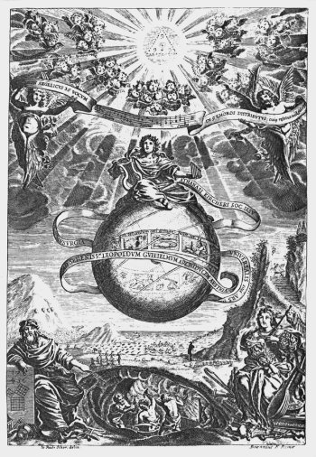
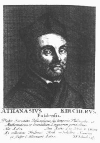

Inhoudsopgave
Besluit (3) Inhoudsopgave
Besluit (3)  Musurgia
Universalis Musurgia
Universalis
Athanasius Kircher (1601-1680)
| Voor
Athanasius Kircher is de wereld één grote samenklank,
één harmonie met God: ‘een symphonie van God met de ganse
wereld’ (Symphonismus DEI cum Vniversa natura.)(1). Kircher ontwerpt in zijn Musurgia
Universalis een muzikaal wereldbeeld waarin alles een plaats in die
harmonie heeft.
Muziek kan, vanwege haar mathematische aard als wetenschap
in het quadrivium(2) èn
als meest volmaakte kunst, de mens kennis van die harmonie (van de natuurlijke
wereld en van het goddelijke) geven: Musica nihil aliud est, quam omnium
ordinem scire, ‘muziek is niets anders dan van alles de orde te
kennen.’
In deze zinsnede, door Kircher uit de Asclepius(3) genomen en als motto aan het tiende
boek van zijn Musurgia Universalis meegegeven, klinkt ook de
wetenschaps- en muziekopvatting van de barok door: er is een door God geschapen
orde in deze wereld aanwezig; deze ordo is kenbaar met behulp van het
getal (numerus).
De bijbel wettigde deze opvatting: sed omnia
mensura et numero et pondere disposuisti, ‘maar Gij hebt alles naar
maat, getal en gewicht geordend.’(4) Keer op keer komt dit in talloze geschriften uit de
barok, muziektheoretisch of anderszins, tot uiting.(5)
De musica mundana in Kircher’s opvatting
is slechts ëën trede in deze ordening, maar daarover later.
Allereerst wil ik enige aandacht aan Kircher’s leven en werk besteden, om
daarna, in een aantal stappen, Kircher’s opvattingen (en dan met name die
aangaande de musica mundana) te achterhalen. | | afb. 29 Titelpagina Musurgia
Universalis |
I
Na lager onderwijs aan de Jezuïetenschool van Fulda
vervolgde Kircher (6) zijn opleiding
door zich in 1618 als novice aan het Jezuïtencollege te Paderborn te
verbinden. Door de 30-jarige oorlog echter (1618 - 1648) werd hij in 1622
gedwongen deze plaats te verlaten en na korte verblijven in Keulen, Koblenz en
Heiligenstadt arriveerde hij in 1624 te Mainz om theologie te studeren; een
studie die hij in 1628 afsloot, waarna hij tot priester gewijd werd. In 1629
werd hij benoemd tot professor (wiskunde, filosofie en oosterse talen) te
Würzburg.
|
Ook hier werd zijn lot door de 30-jarige oorlog
beïnvloed, daar het Zwitserse leger in 1631 de stad dreigde te veroveren
en om aan dit gevaar te ontkomen vluchtte Kircher naar Frankrijk. In Avignon
ontving hij in 1633 de order naar Wenen te vertrekken om een betrekking als
wiskundige aan het hof van Keizer Ferdinand II op zich te nemen. Zijn reis naar
Wenen zou, omdat Duitsland vanwege de oorlog onveilig was voor een Jezuït,
door Italië leiden.
Tijdens een kort bezoek aan Rome werd zijn order gewijzigd, dit omdat Kircher
op voorspraak van senator Nicolaas de Peiresc (die hij in Avignon had leren
kennen) bij zowel kardinaal Francesco Barberini als paus Urbanus VIII een
andere benoeming ontving, namelijk als professor in de wiskunde, de natuurkunde
en oosterse studies aan het Collegio Romano te Rome. Dit was een
prestigieuze positie, want het Collegio Romano was het belangerijkste centrum
van de Jezuïtenorde.
Een aantal jaren later werd Kircher van zijn leeropdracht ontheven en kon hij
zich de rest van zijn leven geheel aan zijn studies wijden. Kircher zou Rome,
op enkele korte reizen door Italië na, nooit meer verlaten en het was te
Rome dat zijn oeuvre ontstond.(7) |
|
Athanasius Kircher
|
II
Kircher’s oeuvre is buitengewoon omvangrijk (32
lijvige folianten, gecompleteerd door een uitgebreide correspondentie) en
handelt over de meest uiteenlopende onderwerpen: van Egyptologie (Oedipus
Aegyptiacus. 3 delen, Rome 1651-54) tot magnetisme (Magnes, sive de Arte
Magnetica. Rome, 1641); en van geologie (bijvoorbeeld Mundus
subterraneus. 2 delen. Amsterdam, 1661, 1678.) tot astronomie en
wiskunde.(8) Vanwege de omvang van
Kircher’s werk en de diversiteit van onderwerpen kan Kircher met recht
als een der laatste polyhistores betiteld worden. Immers, het is
moeilijk om na de dood van Kircher iemand te noemen die zo’n divers en
omvangrijk wetenschappelijk oeuvre heeft nagelaten.
Wel dient daarbij te worden opgemerkt dat kwantiteit niet automatisch garant
staat voor kwaliteit: Kircher maakte vaak (nu, in onze ogen) te vergaande, te
fantasievolle conclusies; ook controleerde hij te weinig zijn materiaal.(9) Wat wij nu als te vergaande conclusies
beschouwen vindt men zeker in Oedipus Aegyptiacus, een buitengewoon
omvangrijk werk van meer dan 2000 foliopagina's waarin Kircher o.m. de
hiërogliefen poogt te ontcijferen, een poging waarmee hij zeer veel eer
inlegde en een die een belangrijke rol heeft gespeeld bij de popularisering van
‘het Egyptische’ in de 17de eeuw.(10) Toen echter Jean Francois Champollion in 1822-24 met
behulp van de steen van Rosetta (een tablet waarop dezelfde tekst in het
Grieks, demotisch èn in hiërogliefen was gegrift) tot de juiste
interpretatie van de hiërogliefen kwam, bleek dat deze niet, zoals Kircher
had gedacht, een geheime Egytische leer bevatten (een leer die van rond de
zondvloed zou stammen en door Hermes Trismegistus - Hermes de driemaal
grootste - opgesteld zou zijn, een leer waaraan bijvoorbeeld Joden en Grieken
hun kennis van het goddelijke en de kosmos ontleend zouden hebben(11), maar veeleer de meer
prozaïsche weergave van bijvoorbeeld data, rekeningen en schrijfonderwijs,
of van lijsten waarop de opeenvolging van de verschillende koningen was
opgetekend.(12)
Kircher schreef twee boeken die de muziek als hoofdthema hebben: Musurgia
Universalis (1650) en Phonurgia Nova (1673); het eerste werk
behandelt alle aspekten van de muziektheorie uit Kircher’s tijd, het
tweede slechts een onderdeel, namelijke de akoestiek. Hierom kan de
‘Musurgia’ als Kircher’s hoofdwerk over de muziek beschouwd
worden.(13)
1. Athanasii Kircheri
... Musurgia Universalis sive Ars Magna Consoni et Dissoni in X libros
digesta. Rome, 1650. Twee delen. Editie: Ulf Scharlau, Musurgia
Universalis. Hildesheim, Olms, 1970. (in het vervolg MU.; citaat:
deel II, p. 454.) (terug naar tekst)
2. Het quadrivium, zoals de middeleeuwen en
renaissance dit aan de barok doorgaven, bestaat uit vier wetenschappen
(aritmetica, musica, geometria en astronomia) die alle, met behulp van het
getal, een bepaald aspect van de ruimte (de ervaarbare uitgestrektheid) tot
onderwerp hebben. Zie hierover bijvoorbeeld: Rolf Dammann, Der Musikbegriff
im deutschen Barock. K“ln, Arno Volk Verlag, 1967. pp. 26-27 (terug naar tekst)
3. Ook De Voluntate Dei genaamd, deze aan Apuleius
(2de eeuw n.c.) toegeschreven Latijnse dialoog vormt samen met het Corpus
Hermeticum (een vijftiental Griekse dialogen) de bron voor het hermetisme
in de 16de eeuw, zie hierover noot 11. (terug naar
tekst)
4. Liber Sapientiae 11 vs 21. Vergelijk hiermee: Cum
igitur Musica siue harmonia nihil aliud sit, quam numerus, mensura, pondus,
[...]. (‘Omdat derhalve muziek of harmonie niets anders is dan getal,
maat, gewicht, ...’. MU. II, pp. 365-366). Overigens, het boek
Wijsheid is ontstaan onder hellenistische invloeden (het wordt gedateerd tussen
200 en 30 v.c., zie de ‘inleiding op Wijsheid’, Willibrord
vertaling) en is hierdoor van dezelfde pythagoreïsch-platonische geest
doordrongen als het Corpus Hermeticum (voor een verwoording van deze
‘geest’ zie Joh. Kepler - een inleiding,
noot 13 ). In feite begaat men met de bijbelse motivatie aan de hand van
het boek wijsheid een faux pas: het is immers dezelfde traditie, terwijl
men het voorstelt alsof er van twee, gescheiden, tradities sprake is. (terug naar tekst)
5. Zie over de talrijke aspecten van ordo en
numerus in de barok en de theologische en filosofische implicaties
ervan: Rolf Dammann, Musikbegriff. Met name hoofdstuk 1 ‘Der
Begriff musikalischer Ordnung’ pp. 22-92; of Ulf Scharlau,
‘Athanasius Kircher und die Musik um 1650’ Athanasius Kircher
und seine Beziehungen zum gelehrten Europa seiner Zeit. Wiesbaden, O.
Harrassowitz, 1988. pp. 53-67 (met name pp. 55-57) (terug
naar tekst)
6. Geboorte- en sterfdatum zijn niet met zekerheid bekend,
1601 en 1602 worden voor het eerste (te Geisha, R“hn), 30 october of 27
november 1680 worden voor het laatste genoemd. Zie hierover John Fletcher,
'Athanasius Kircher: a man under pressure' Athanasius Kircher und seine
Beziehungen zum gelehrten Europa seiner Zeit. p. 1 (terug naar tekst)
7. Voor deze korte biografie heb ik gebruik gemaakt van:
George J. Buelow, ‘Athanasius Kircher’ NG. 10. pp. 73-74;
John Fletcher, ‘Athanasius Kircher and his Musurgia Universalis’
Musicology; a Journal of the Musical Society of Australia. 7 (1982): pp.
73-82; Joscelyn Godwin, Athanasius Kircher. A Renaissance Man and the Quest
for Lost Knowledge. London, Thames and Hudson Ltd, 1979. pp. 9-15; Ulf
Scharlau, Athanasius Kircher (1601-1680) als Musikschriftsteller.
Marburg, 1969. pp. 12-18; en Wilhelm Stauder, ‘Athanasius Kircher’
MGG. 7. kols. 937-940. (terug naar tekst)
8. Voor bibliografie Kircher’s oeuvre zie geciteerde
werken voorgaande noot, met name Godwin en Scharlau, maar zie ook John Fletcher
(ed.), Athanasius Kircher und seine Beziehungen zum gelehrten Europa seiner
Zeit. Wiesbaden, O. Harrassowitz, 1988. Hierin wordt ook Kircher’s
omvangrijke briefwisseling behandeld. (terug naar
tekst)
9. George L. Buelow, ‘Athanasius Kircher’
loc. cit. p. 73; maar zie ook John Fletcher, ‘Athanasius Kircher
and his Musurgia Universalis’ loc. cit. p. 75 en van dezelfde
auteur ‘Athanasius Kircher: a man under pressure’ loc. cit.
pp. 4-5 (dit artikel bevat ook een weergave van de meningen over
Kircher’s wetenschappelijke status); of Joscelyn Godwin,
‘Athanasius Kircher and the Occult’ Athanasius Kircher und seine
Beziehungen zum gelerten Europa seiner Zeit. pp. 17-36. Dit laatste artikel
geeft een interessant inzicht in Kircher’s ideeën over magie:
Kircher verdeelt de magie in ‘demonic’, deze is des duivels
(alchemie, bepaalde vormen van kabbala e.d., zie over de kabbala bijv. Gershom
Scholem, Zur Kabbala und ihrer Symbolik. Frankfurt a/M, Suhrkamp,
1981.). Kircher wijst de leringen af van bijv. Paracelsus, Agrippa, de
rozenkruizers en Robert Fludd); en ‘natural’ oftewel natuurlijke
magie. Deze laatste bestaat wederom uit ‘contemplative’
(bijvoorbeeld de wijsheid verborgen in de ‘schema’s van
overeenstemming’, zie noot 33) en
‘effective’. Onder dit laatse verstond Kircher wat wij nu (natuur)
wetenschap noemen, in veel gevallen allerlei werktuigen (Godwin geeft het
voorbeeld dat een kar met wielen niet, terwijl een fontein wel als magisch werd
gezien: alles waarvan de directe werking verborgen was, zag men als magisch).
Maar ook hierin nam Kircher veel voetstoots aan: bijv. de
‘slangensteen’ (een steen gevonden in de kop van een cobra, welke
slangenbeten zou genezen), of de zgn. generatio spontana, het
‘zomaar’ ontstaan van insekten in bijv. mest of modder. Voor een
verdere behandeling van Kircher's ideeën (bijv. over het al dan niet
bestaan van onderaardse draken en griffioenen) zie het artikel van Godwin; voor
een behandeling van de diverse soorten van magie in de 17de eeuw zie: Lynn
Thorndyke, A History of Magic and Experimental Science. London/New York,
Columbia U.P., 1923. VII. pp. 272-323 (terug naar
tekst)
10. George J. Buelow, ‘Athanasius Kircher’
loc. cit. p. 73 (terug naar tekst)
11. Deze leer wordt door Godwin ook sophia perennis
(‘duurzame wijsheid’) genoemd, waaronder Kircher volgens Godwin het
volgende verstaat: ‘Egyptian wisdom, Phoenician theology, Chaldean
astrology, Hebrew cabbala, Persian magic, Pythagorean mathematics, Greek
theosophy, Mythology, Arabian alchemy, and Latin philology’, waarbij
Egypte als bakermat voor al deze kennis geldt (Hermes Trismegistus zou een
‘all-wise Egyptian priest’ uit de tijd van aartsvader Abraham
zijn), zie ‘Athanasius Kircher and the Occult’ loc. cit. p.
18. (en van dezelfde auteur Athanasius Kircher. A Renaissance Man and the
Quest for Lost Knowledge.). Daniel P. Walker echter noemt deze leringen
prisca theologia (‘oude theologie’), zie diens The
Ancient Theology. London, Duckworth, 1972. Dit werk behandelt een aantal
thema’s uit deze ‘oude theologie’, bijvoorbeeld Orpheus als
priester en magiër en diens betekenis in de renaissance. Maar zie over
het hermetisme en de rol ervan in de late renaissance ook Frances A. Yates,
Giordano Bruno and the Hermetic Tradition. London, Routledge and Keegan
Paul, 1964. Dit laatste werk handelt over de rol van het hermetisme in de
renaissance, dus vanaf de vertaling van het Corpus Hermeticum (dat, naar
het eerste boek, ook Pimander genoemd wordt) door Marsilio Ficino in
1464 tot Isaac Causabon’s vernietigende kritiek in 1614 (Causabon toonde
met behulp van inhoudelijke en formele kritiek aan dat het Corpus
Hermeticum een laat-christelijke - 2de/3de eeuw - vervalsing moest zijn,
zie diens De rebus sacris et ecclesiasticis exercitationes XVI. Ad
Cardinalis Baronii Prolegomena in Annales. London, 1614). (terug naar tekst)
12. Zie hierover (en over Champollion’s
ontcijfering) bijvoorbeeld W.V. Davies, Egyptian hieroglyphs. London,
British Museum Publications, 1987. Over Kircher’s merkwaardige (en
onjuiste) interpretaties zie pp. 47-48. Wel opgemerkt dient te worden dat
Kircher als eerste een Koptische grammatica en woordenlijst publiceerde
(Prodromus Coptus sive Aegyptiacus., 1636 en Lingua Aegyptiaca
Restituta., 1643) en daarmee toch een grote rol heeft gespeeld in de
uiteindelijke ontcijfering van de hiërogliefen (dit laatse naar: M. Pope,
The Story of Decipherment: from Egyptian hieroglyphic to Linear B.
London, 1975. pp. 28-33) (terug naar tekst)
13. Zie ook Ulf Scharlau, Athanasius Kircher. p. 36
e.v. Phonurgia Nova is in feite niets anders dan een uitwerking van het
negende boek (Magia consoni et dissoni) van de Musurgia Universalis. Zie
ook K.H. Göttert, ‘Auch eine Tonkunst. Über Athanasius Kirchers
Phonurgia Nova’ Concerto 10 (jul.-aug. 1993) pp.
21-22/27-29; of Ulf Scharlau, ‘Athanasius Kircher und die Musik um
1650’ loc. cit. p. 55 (terug naar
tekst)
|